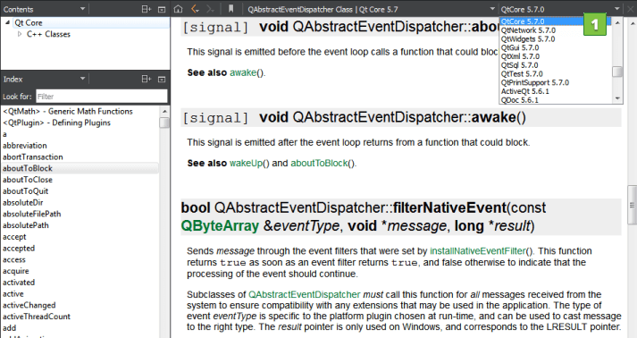

Using the Help Mode
Qt Creator comes fully integrated with Qt documentation and examples using the Qt Help plugin.
- To view documentation, switch to Help mode.
- To view context sensitive help on a Qt class or function as a tooltip, move the mouse cursor over the class or function. If help is not available, the tooltip displays type information for the symbol.
- To display the full help on a Qt class or function, press F1 or select Context Help in the context menu. The documentation is displayed in a pane next to the code editor, or, if there is not enough vertical space, in the fullscreen Help mode.
- To select and configure how the documentation is displayed in the Help mode, select Tools > Options > Help.
The following image displays the context sensitive help in the Edit mode.
Viewing Function Tooltips
To hide function tooltips by default, select Tools > Options > Text Editor > Behavior > Show help tooltips using the mouse > On Shift+Mouseover. You can still view the tooltips by pressing and holding down the Shift key.
To use a keyboard shortcut for viewing help tooltips, select Show help tooltips using keyboard shortcut (Alt).
Finding Information in Qt Documentation
Qt Creator, Qt and other Qt deliverables contain documentation as .qch files. All the documentation is accessible in the Help mode.
To find information in the documentation, select:
- Bookmarks to view a list of pages on which you have added bookmarks.
- Contents to see all the documentation installed on the development PC and to browse the documentation contents.
- Index to find information based on a list of keywords in all the installed documents.
- Open Pages to view a list of currently open documentation pages.
- Search to search from all the installed documents.
Adding Bookmarks to Help Pages
You can add bookmarks to useful help pages to easily find them later in the Bookmarks view. You can either use the page title as the bookmark or change it to any text. You can organize the bookmarks in folders in the view.

To add a bookmark to an open help page:
- Click the
 (Add Bookmark) button on the toolbar.
(Add Bookmark) button on the toolbar. - In the Add Bookmark dialog, click OK to save the page title as a bookmark in the selected folder.
To import and export bookmarks, select Tools > Options > Help > General Settings > Import or Export.
Full-text Search
In the Search pane, you can use full-text search for finding a particular word in all the installed documents. In the Search for field, enter the term you are looking for, and select the Search button. All documents that contain the specified term are listed. The list is sorted by the number of search hits that the documents contain. Select a document in the list to open it.
The following are examples of common search patterns:
deeplists all the documents that contain the worddeep. The search is not case sensitive.deep*lists all the documents that contain a word beginning withdeepdeep copylists all documents that contain bothdeepandcopy"deep copy"lists all documents that contain the phrasedeep copy
For more flexibility, use the Advanced search. Specify words to exclude from the search hits, or search for an exact phrase or for similar words. For example, searching for QStin, QSting, or QStrin lists all the documents with titles that are similar, such as QString. Combine options to improve the search results.
Full-text search is based on indexing all the installed documents the first time when you open the Search pane. If you add or remove documents, Qt Creator recreates the index.
If you cannot find words that you know are there, indexing might not have been completed for some reason. To regenerate the index, click  (Regenerate Index).
(Regenerate Index).
Punctuation is not included in indexed terms. To find terms that contain punctuation, such as domain names, use the asterisk as a wild card. For example, to find Pastebin.Com, enter the search term Pastebin*.
Adding External Documentation
You can display external documentation in the Help mode. To augment or replace the documentation that ships with Qt Creator and Qt:
- Create a .qch file from your documentation.
For information on how to prepare your documentation and create a .qch file, see The Qt Help Framework.
- To add the .qch file to Qt Creator, select Tools > Options > Help > Documentation > Add.
Detaching the Help Window
By default, context-sensitive help is opened in a window next to the code editor when you press F1. If there is not enough vertical space, the help opens in the full-screen help mode.
You can specify that the help always opens in full-screen mode or is detached to an external window. Select Tools > Options > Help > General and specify settings for displaying context-sensitive help in the On context help field. To detach the help window, select Always Show in External Window.
Selecting the Start Page
You can select the page to display when you open the Help mode in the Tools > Options > Help > General > On help start field. To display the page and help panes that were open when you exited the mode, select the Show My Tabs from Last Session option. However, Web pages are not opened, because loading them would slow down opening the Help mode.
To display a particular page, select Show My Home Page, and specify the page in the Home Page field.
To display a blank page, select the Show a Blank Page option. You can also select the Use Blank Page button to set a blank page as your home page.
Using Documentation Filters
You can filter the documents displayed in the Help mode to find relevant information faster. Select a filter from a list of filters (1). The contents of the Index and Contents pane in the sidebar change accordingly.

You can modify the filters to include external documentation, for example, or you can define your own filters. To construct filters, you can use the filter attributes that are specified in the documentation. Each document contains at least one filter attribute. If several documents contain the same filter attribute, such as tools, you can use that attribute to include all those documents.
To add filters:
- Select Tools > Options > Help > Filters > Add.
- Enter a name for the filter and press OK.
- In Attributes, select the documents that you want to include in the filter.

- Click OK.
- In the Help mode, select the filter in the list of filters to see the filtered documentation in the sidebar.
To modify filters, select a filter in Filters, select the attributes, and then click Apply.
To remove filters, select them in Filters, and click Remove.